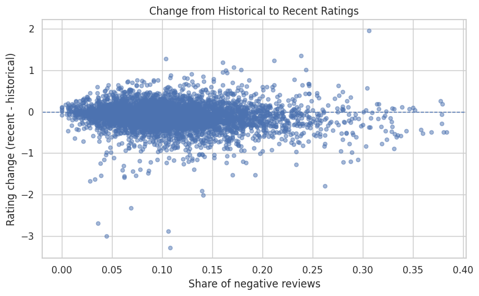
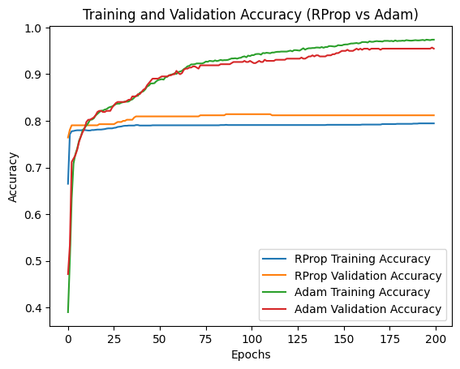
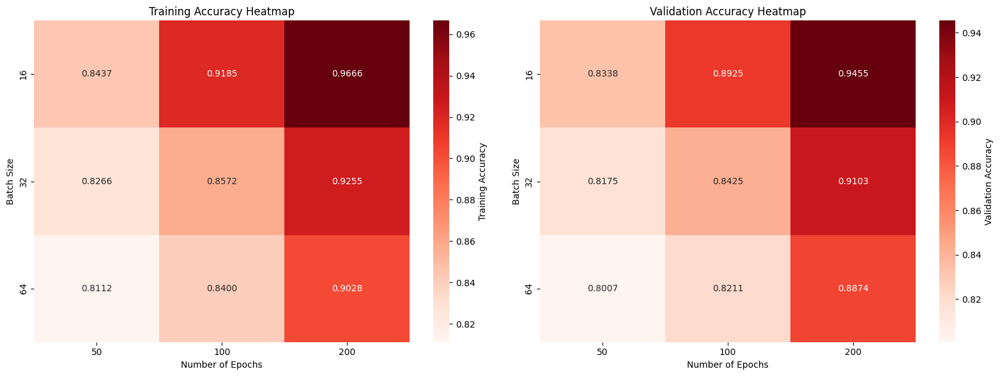
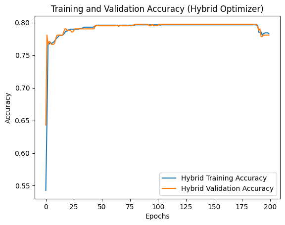
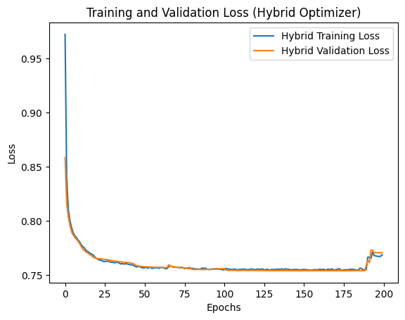
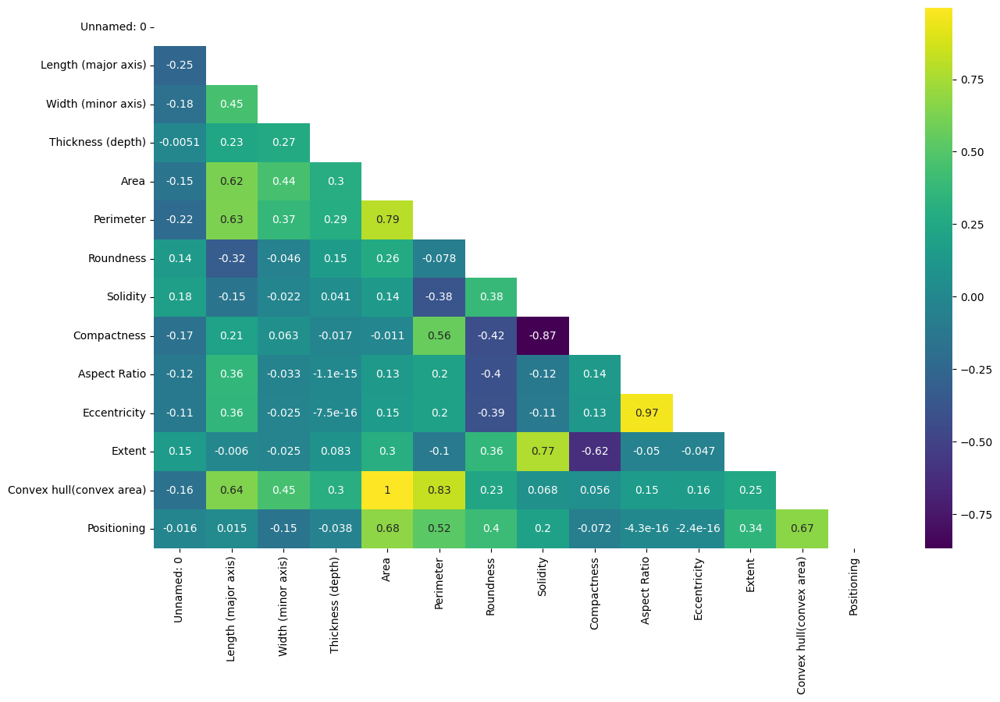

Actual review rating distributionActual top-risk product ranking

Actual review-risk scatter plot
Problem
Explore data quality and customer-review patterns at scale, then identify sufficiently reviewed parent products with elevated customer-experience risk.
Dataset and processing
Amazon Reviews 2023 Clothing, Shoes and Jewelry. Source file 27.81 GB; line-safe processing subset 3.221 GB with 7,231,543 records (14 Part 1 columns). Review dates 1 December 1999–25 March 2023.
Part 1 methodology
PySpark schema and quality profiling, rating exploration, potential-duplicate detection, the seven Vs of big data, caching and distributed operations. Source evidence records 23,544 potential duplicates and 495 reviews with empty text.
Part 2 methodology
Parent-product aggregation with DataFrames and RDD map/reduceByKey validation, a historical/recent rating comparison and a composite risk score based on negative-review share, volume, helpful votes on negative reviews and rating deterioration.
Source-checked findings
7,231,543 processed reviews grouped into 1,836,721 parent products. The threshold of at least 50 reviews retained 17,765 eligible products. Explicit RDD/DataFrame aggregation checks found zero mismatches. Earlier Part 1 descriptive figures reported a mean rating of 4.253 and 64.27% five-star reviews.
Limitations
The analysis uses a 3.221 GB sequential subset, not the entire 27.81 GB raw file. Voluntary reviews, duplicate ambiguity, product listing merges and partial 2023 coverage can distort interpretation. The composite risk score is a descriptive prioritisation heuristic, not a causal or prospective forecast.
Investigate how domain-informed feature engineering and regression model choice affect sale-price prediction and interpretability.
Dataset and protocol
Ames Housing: 2,930 property sales. Fixed seed 16153970 splits 2,344 development properties from 586 locked test properties. Five development folds support model selection by RMSE.
Methodology
Compared Ridge, Random Forest and XGBoost pipelines with training-fold preprocessing. The final engineered-feature XGBoost configuration was frozen before test evaluation. Residual analysis, subgroup checks and SHAP support interpretation.
Source-checked test results
MAE $13,885.15; RMSE $25,354.31; R² 0.8999. Approximate bootstrap 95% intervals: MAE $12,372–$15,772; RMSE $18,165–$34,407; R² 0.840–0.941. Values match saved Notebook 05 outputs; training was not rerun for this portfolio.
Interpretation
The final model improved test RMSE over the saved Ridge reference ($30,911.52) and naive-mean reference ($80,166.89). These results describe one fixed test set, not future-market performance.
Limitations
One historical location and fixed split limit generalisation. The engineered comparison also changes absence handling, so it does not isolate feature creation alone. SHAP is descriptive, not causal. Later feature-removal checks are exploratory rather than independent confirmation.
Explore whether text augmentation can support low-resource English-Xitsonga translation research and identify which augmentation methods preserve useful sentence content.
Approach
Compared back-translation, random deletion, random insertion, word replacement and synonym replacement. The report presents BLEU and METEOR scores for these augmentation methods and a 0.84 cosine-similarity threshold for pseudo-labels.
Reported augmentation results
Word replacement achieved the highest reported BLEU (89.45) and METEOR (0.9361); random insertion followed (BLEU 80.61, METEOR 0.9189). These are report-level augmentation metrics, not independently confirmed full machine-translation system improvements.
Model comparison
Evaluated traditional and transformer classifiers for similarity-derived translation-consistency labels. DistilBERT led with 86.26% accuracy and 0.8714 F1; these are classification metrics, not translation accuracy.
Interpretation and limitations
Augmentation quality depends on the method and scoring protocol. Similarity-derived pseudo-labels cannot substitute for independent bilingual assessment; the reported BLEU and METEOR should not be interpreted as definitive improvements over an unaugmented translation baseline.
Dataset source:DSFSI Vuk’uzenzele English-Xitsonga sentence-aligned corpus (Hugging Face). The Data Mining report examines 3,748 sentence pairs: 2,623 training, 563 evaluation and 562 test. The aligned records include eng, tso and score fields. Locally loaded Parquet splits were used for the coursework; the public corpus is its documented source.
Saved augmentation comparison · cosine similaritySaved similarity distributions and threshold
Research question
How do augmentation strategies affect semantic similarity in low-resource English-Xitsonga text, and how do different text classifiers behave when trained to distinguish similarity-threshold pseudo-labels?
Data exploration
Reviewed missingness, sentence lengths, unigram and bigram frequencies and word clouds. Used TF-IDF with K-means, PCA and t-SNE to visualise structure in aligned sentence pairs. The saved notebook's source splits contain 3,748 records in total; model-comparison training used a much smaller sample.
Augmentation and filtering
Applied back-translation, random deletion, random insertion, word replacement and synonym replacement to a 1% sample of the training set (about 26 sentences). Compared original versus augmented sentences using multilingual BERT embeddings and cosine similarity; the coursework selected a threshold of 0.83 for pseudo-labelling.
Exploratory model comparisons
Trained Logistic Regression, Naive Bayes, SVM, mBERT, DistilBERT, XLM-R, RoBERTa and a South African BERT variant on 130 pseudo-labelled augmented examples, with an 80/20 split (104 train, 26 evaluation). Saved evaluation accuracies included 69.23% for Logistic Regression and SVM, 80.77% for mBERT and XLM-R, 84.62% for RoBERTa and 88.46% for zaBERT.
What the results mean
These scores describe a small, in-sample-derived pseudo-label classification task; they are not English-Xitsonga translation quality scores and do not establish out-of-sample performance on independent texts. Similarity thresholds defined the target labels, so the results should not be interpreted as externally validated translation correctness.
Limitations and reproducibility
The experiment sampled only 1% of the training split before augmentation and reused closely related variants of original sentences. This can create train/evaluation dependence and optimistic performance. The exact relationship between the locally uploaded Parquet files and the published corpus has not been independently checked; distinct-seed robustness and independent human translation judgments were not established. The original final notebook and report document the exploratory analysis.
PlantVillage · tomato early blightPlantVillage · healthy tomato leaf
Leaf sample imagery: PlantVillage Dataset (upstream CC BY-SA 3.0 declaration). These are dataset examples, not model predictions.
Research question
How much model size can be removed through pruning, quantisation and knowledge distillation while preserving crop-disease classification accuracy?
Dataset and protocol
PlantVillage: 54,299 RGB leaf images across 38 classes. Fixed hybrid-v2 train/validation/test split; three training seeds (14, 27, 42); validation-based candidate selection.
Methodology
Trained EfficientNet-B0 and MobileNetV3-Small FP32 baselines; investigated structured pruning, post-training INT8 quantisation and knowledge-distilled compact students. Evaluated test accuracy, macro-F1, model size and hosted-CPU latency.
My focus within the collaborative project was model compression. I developed and refined the compression experiment pipeline, ran and evaluated the three-seed comparisons, and prepared the model-compression results, reproducibility documentation and report contribution.
Key interpretation
INT8 reduced EfficientNet-B0 model size by approximately 69.6%, with a mean accuracy reduction of 1.068 percentage points, but increased measured hosted-CPU latency. The compact distilled student showed a stronger size/latency trade-off with lower accuracy. Smaller did not consistently mean faster.
Limitations
MobileNetV3-Small INT8 failed the validation accuracy gate for all three seeds, so no eligible test result is reported. Hosted CPU timings are not mobile-device benchmarks. The fixed split does not demonstrate independent field generalisation; some near-duplicate and leaf-identity concerns remain.
Read my model-compression GitHub project. Evidence: model-compression source repositoryThree-seed results and limitations. This case study covers my model-compression contribution within the collaborative project. Credit for the broader project remains with the original contributors. The repository contains code and curated JSON evidence. Full checkpoints and generated figures/CSV tables remain in the saved Kaggle runs linked from the repository.
Dataset source (confirmed):Kaggle — Almond Types Classification. The Almond.csv dataset used for contains 2,803 records covering Mamra, Sanora and Regular almonds. See the original assignment report for the documented experiment and dataset characteristics.

Saved RProp vs Adam accuracy curvesSaved optimiser loss curves

Saved hyperparameter heatmaps

Saved hybrid-model accuracy

Saved hybrid-model loss

Saved feature correlation heatmap
Problem
Classify Mamra, Sanora and Regular almonds from measured geometric features while comparing neural-network learning algorithms and their training behaviour.
Dataset
The original assignment report describes 2,803 almond samples with geometric measurements, including length, width, thickness, area, perimeter and shape descriptors. Some measurements have substantial missingness. The source notebook expects Almond.csv; the dataset itself is not published in the repository.
Preprocessing and evaluation
The assignment documents mean imputation, scaling/encoding and a 70% training, 15% validation and 15% test split. The report discusses 1,962 training, 420 validation and 421 test samples. Missing-value handling should be reviewed carefully if reproducing the experiment.
Neural-network experiments
Compared Resilient Propagation (RProp), Adam and a hybrid Adam–RProp strategy using PyTorch. Explored activation functions, hidden-layer configurations, and batch sizes 16, 32 and 64 across 50, 100 and 200 epochs, including K-fold cross-validation and statistical comparisons.
Saved evaluation
The saved hybrid model reports 80.29% held-out test accuracy and 0.7486 test loss. The notebook figures illustrate training/validation trajectories and the hyperparameter comparison. These are saved academic results; the models were not retrained for this portfolio.
How to interpret the comparison
The assignment report also lists a higher accuracy for an Adam run in a separate model-comparison table. Because experimental settings and evaluation context across those figures are not fully reconciled, the hybrid result is presented as its own reported test outcome, not as proof that hybrid optimisation outperformed Adam.
Limitations and reproducibility
The published repository provides the notebook and requirements but not Almond.csv. Preprocessing leakage, experimental splits, random seeds and the distinction between fold-validation results and held-out test results should be audited before treating the comparison as independently reproducible or generalisable.
Academic context
Developed for Artificial Intelligence II at the University of Pretoria. The assignment addresses neural-network training, optimisation and hyperparameter choice, consistent with the module's data-preparation and neural-network hyperparameter lecture materials.
Benchmark data: Objective-function exercises and travelling-salesperson problem instances rather than a single external dataset. The original instance-generation inputs have not yet been published, so no unverified download link is provided.
Problem
Investigate search strategies when objective functions are difficult to optimise analytically.
Dataset
Benchmark objective exercises and travelling salesman problem.
Methodology
Hill climbing, simulated annealing and genetic algorithms.
Results / status
One function exercise found x approximately 1.9696 with fitness approximately 2.9982.
Limitations
Stochastic results depend on seeds, budgets and parameter settings.
Original reports and notebooks will be linked after verification and publication review.